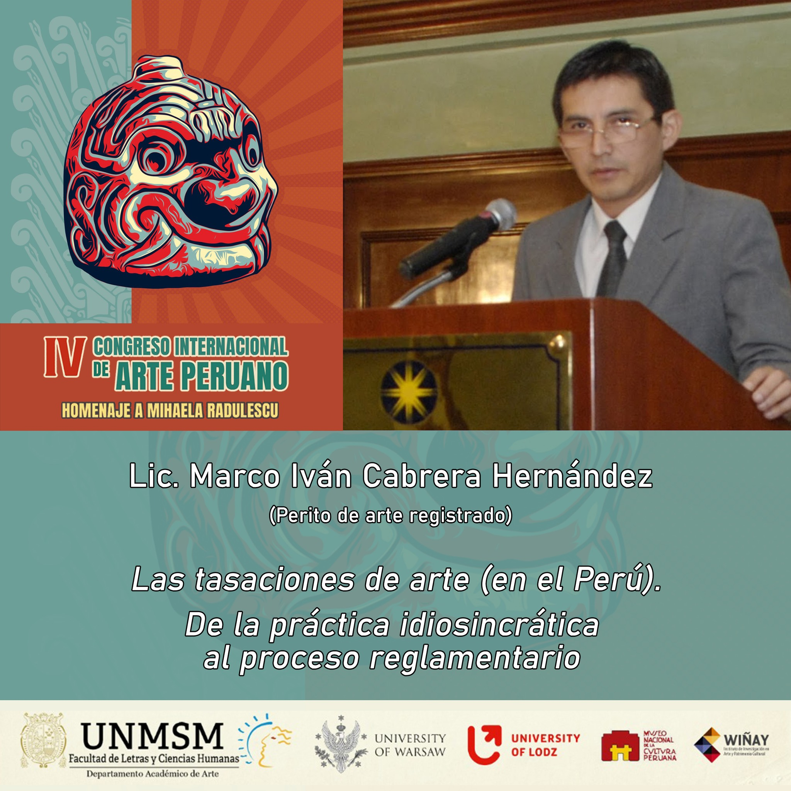

IV Congreso Internacional de Arte Peruano
Afiche oficial del evento académico que reunió a investigadores nacionales e internacionales en torno al arte peruano y sus metodologías de estudio.

Ponencia del autor
Afiche de la participación del ponente, destacando la propuesta metodológica sobre tasaciones de arte en el Perú y su tránsito hacia procesos reglamentarios.
Conferencia
Registro completo de la ponencia presentada en el congreso.
Certificado oficial
Constancia emitida por la Universidad Nacional Mayor de San Marcos por la participación como ponente en el congreso internacional.
Descargar certificado (PDF)